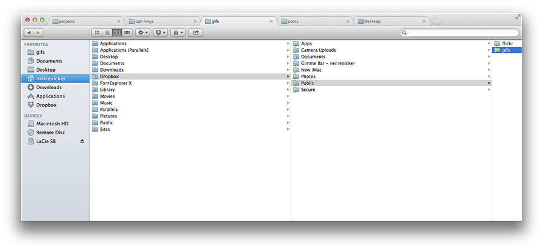

Fix: Finder Columns Too Wide
I recently had a little OS X Finder meltdown. I somehow had set my Finder columns to a very large width permanently; I could temporarily drag to resize the column width, but every time I opened a new Finder window, the columns would reset to be extremely wide again.

I lived with the annoyance for a long time because I couldn’t find any preferences to set the default finder width. I finally discovered the (hidden) solution:
Hold the option/alt key while dragging to resize a Finder column width. Finder will remember that width for future windows.
Oh, and if you’re wondering how I have those cool tabs in my Finder, look no further than the excellent XtraFinder. It’s solid, and has lots of great keyboard shortcuts for powerusers—I can’t imagine ever going back to OS X default finder.
Thanks to a MacRumors user for the tip.